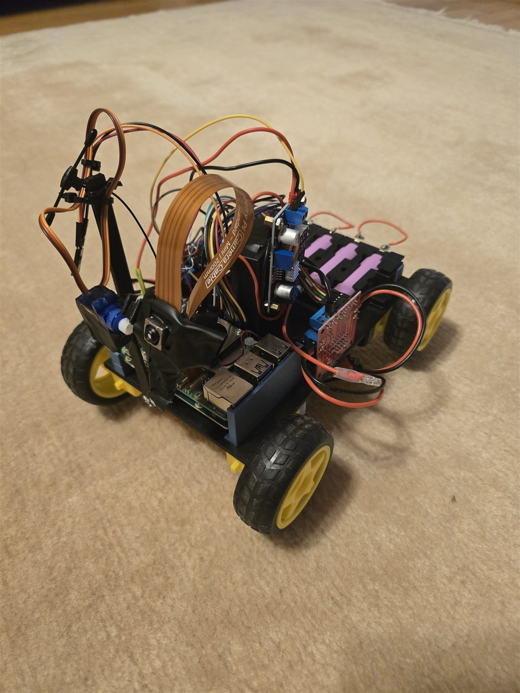

Inference Pipeline - Autonomous Car
An autonomous car that sees obstacles and follows people using onboard AI.
Autonomous car built on a RPi 5 and Hailo-8L AI accelerator, combining real-time object detection and monocular depth estimation to enable obstacle-aware navigation and person-following without dedicated distance sensors.
C++, RPi5 & Hailo AI Accelerator, YoloV8, Depth Anything V2